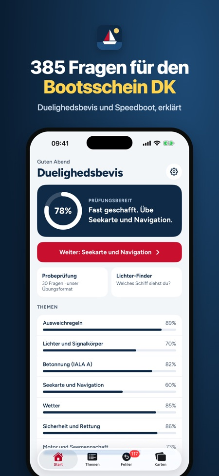
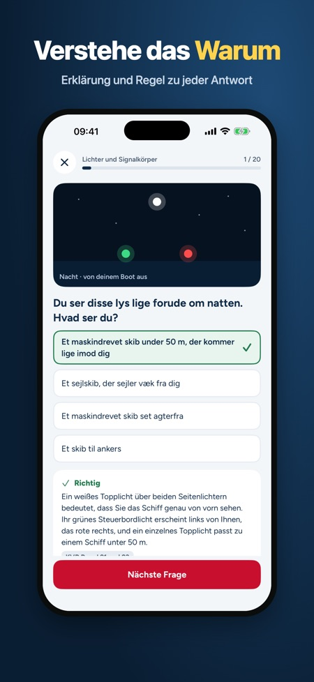
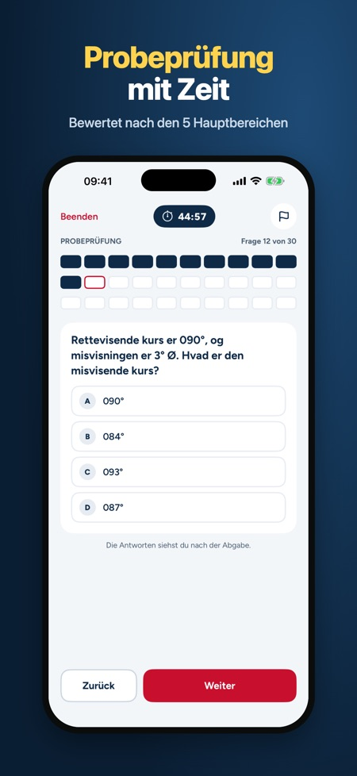

Dänischer Bootsführerschein. Theoriekurs im Winter? Übe 385 Fragen mit Erklärungen, mach eine Probeprüfung wie in der Prüfung bewertet und bestimme Schiffe an ihren Lichtern. Auch Speedboot.



Bereite dich auf die dänische Bootstheorieprüfung (Duelighedsbevis i sejlads) und den Speedboot-Führerschein (Speedbådsbevis) vor. 385 Übungsfragen mit Erklärungen, Probeprüfungen mit Zeit und Karten zu Betonnung, Lichterführung und Schallsignalen. Einmal zahlen, kein Abo.
DAS IST DRIN
• 385 Fragen in 8 Themen: Ausweichregeln, Lichter und Signalkörper, Betonnung (IALA A), Seekarte und Navigation, Wetter, Sicherheit und Rettung, Motor und Seemannschaft sowie Speedboot
• Zu jeder Frage eine Erklärung und ein Regelverweis (KVR)
• 68 Bildfragen mit Lichterführung, Signalkörpern und Tonnen
• Probeprüfung Duelighedsbevis, bewertet wie die Prüfung: höchstens 1 Fehler in jedem der 5 Hauptbereiche und 3 insgesamt
• Probeprüfung Speedboot in zwei Teilen wie die echte Prüfung: höchstens 2 Fehler in Teil 1 und 3 in Teil 2
• Lichter-Finder: wähle die Lichter, die du siehst, und erfahre, welches Schiff es ist und wer ausweicht
• 52 Karten: Betonnung, Feuerkennungen, Lichterführung, Signalkörper und Schallsignale
• Meine Fehler: falsch beantwortete Fragen kommen wieder, bis du sie zweimal in Folge richtig hast
• Startbildschirm mit deinem Stand und dem Thema, das du als Nächstes üben solltest
• Prüfungstermin: Countdown, Tagesziel und Erinnerungen 14, 7 und 2 Tage vor der Prüfung
SO FUNKTIONIERT ES
Wähle Duelighedsbevis oder Speedboot. Ohne Kauf kannst du ein Thema nutzen (beim Speedboot das Speedboot-Thema) und eine komplette Probeprüfung machen. Ein Einmalkauf schaltet alle Themen, unbegrenzte Probeprüfungen, die Karten und den Lichter-Finder frei. Die App funktioniert offline und braucht kein Konto.
Die Fragen sind wie in der Prüfung auf Dänisch. Erklärungen und Menüs gibt es auf Dänisch, Englisch und Deutsch.
Die Theorieprüfung zum Duelighedsbevis hat keine feste Fragenzahl; der Prüfer stellt die Aufgaben und prüft die Ausweichregeln mündlich. Die Probeprüfung der App ist ein Übungsformat.
Diese App ist unabhängig und gehört nicht zur dänischen Seefahrtsbehörde, zum dänischen Seglerverband oder zu einer Behörde. Alle Fragen sind zum Üben geschrieben.